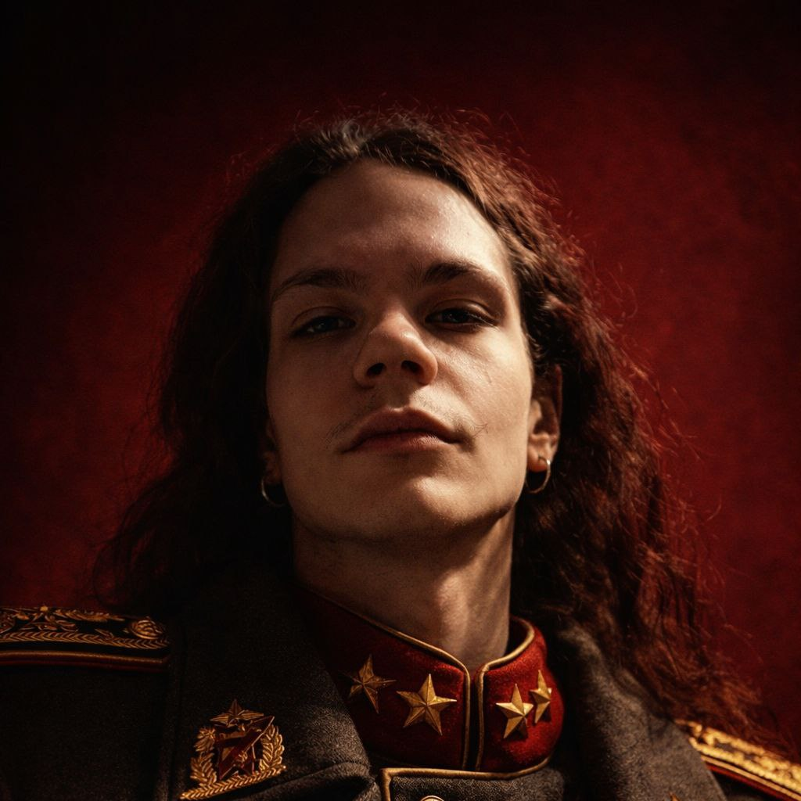

LunarK1ng
фотограф·видеомонтажёр·автор Telegram-канала
Ловлю свет, ритм и настроение — и собираю их в кадры, которые запоминаются. Часть работ и эксклюзивный контент — в канале.
0
подписчиков
0
фотографий
0
видео

О себе
Я — фотограф и видеомонтажёр. Для меня кадр — это не просто картинка, а способ передать эмоцию, атмосферу и характер момента. Мне важно видеть детали, ловить нужную секунду и собирать из них истории, которые цепляют.
В фотографии я работаю со светом, композицией и настроением: портреты, атмосферные сцены, кадры, которые выделяются среди привычного. В монтаже — превращаю сырой материал в динамичный продукт: выстраиваю ритм, цветокоррекцию, переходы, музыку — так, чтобы видео смотрелось на одном дыхании.
Навыки
Пять точек, из которых собирается каждая работа
Фотография
Портрет, свет и атмосфера — кадр, который держит взгляд.
Видеомонтаж
Ритм, склейка и драматургия — видео на одном дыхании.
Цветокоррекция
Настроение кадра через цвет и тон.
Композиция и свет
Выстраиваю кадр как сцену, а не случайный снимок.
Сторителлинг
Истории, которые запоминаются — не просто картинка.
О канале
LunarK1ng — Telegram-канал с эксклюзивным контентом: фото, видео и материалы, которых нет в открытом доступе. Регулярные обновления и качество без компромиссов.
ПрисоединитьсяПреимущества
- Эксклюзивный контент
- Регулярные обновления
- Высокое качество
- Премиум-материалы
Магазин
Выберите тариф для доступа к эксклюзивному контенту